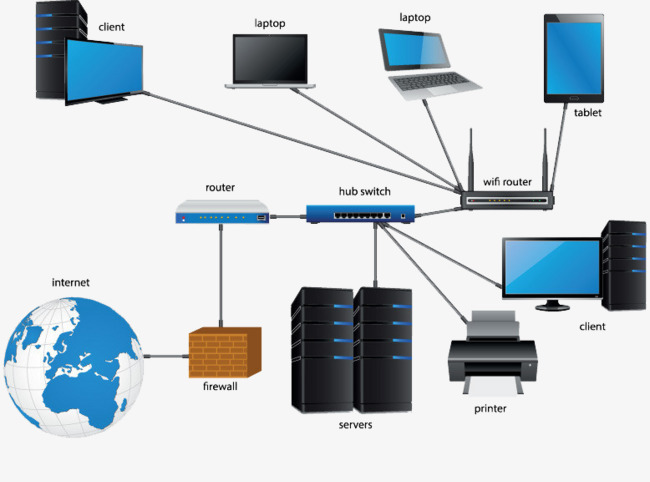
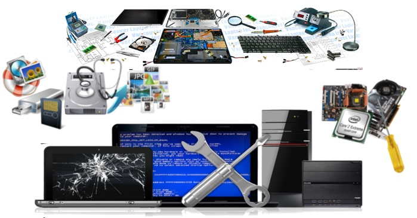

Reseau Informatique
Qu'est-ce que le Réseau informatique, les ordinateur sont relier entre eux par le biais
de certaine équipement informatique telque les swicth les routeur l'ensemble
forme un réseau informartique nous vous apporton des solution
a vos probléme de lenteur et de sécurité nous deployons aussi des service pour vos serveur

Maintenace informatique
La maintenance informatique regroupe toutes les tâches et actions nécessaires au bon fonctionnement d'un système informatique.
Les prestations de maintenance informatique sont proposées par des sociétés de services souvent appellées SSII.
Pour aller plus loin dans la définition de maintenance informatique nous pourrions détaillers les tâches récurrentes et ponctuelles à réaliser.
Cela peut être la sauvegarde des données critiques d'une entreprise, la mise en place et la mise à jour d'un anti-virus, la vérification de l'état du système, des disques durs.
Cela peut aussi être le remplacement d'un matériel défectueux ou l'achat d'un nouveau matériel.
Ces prestations peuvent être réalisées sur site ou à distance, on parle alors de télémaintenance.
Depuis quelques années les prestations proposées par les ssii incluent de la téléphonie ip, celle ci est en effet de plus en plus étroitement liée aux systèmes informatiques.
